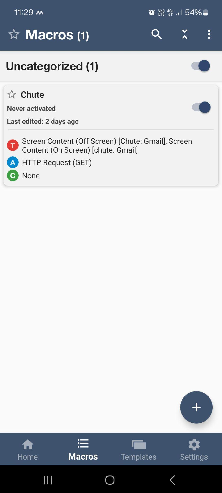
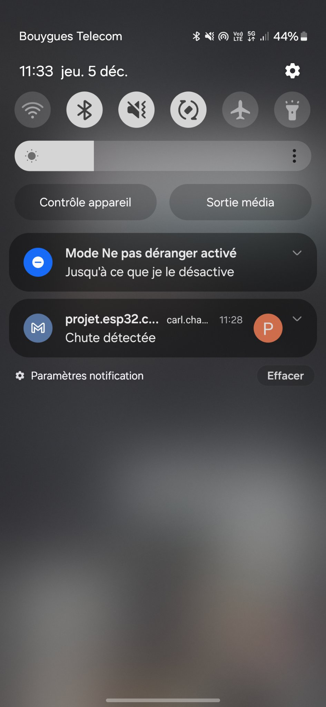
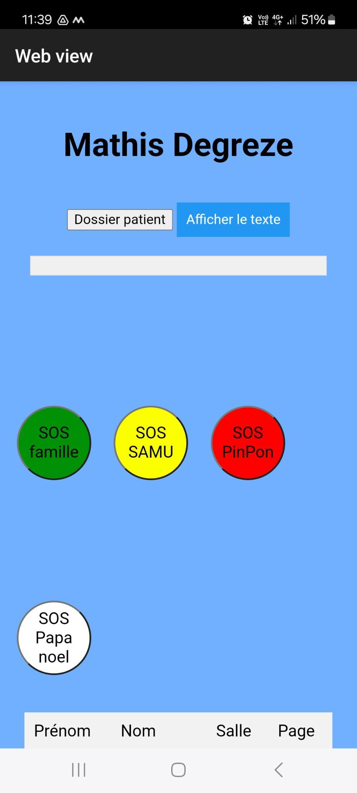
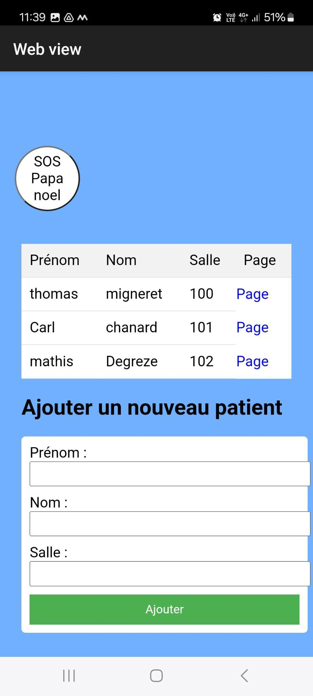

En terminale Bac Pro SN, on devait réaliser un projet de groupe autour d'une carte Arduino et d'un gyroscope, avec le choix entre deux thématiques : un système de détection de chute pour EHPAD, ou un détecteur de séisme. Avec mon groupe, on est partis sur l'EHPAD.
Dans un EHPAD, les résidents sont souvent à risque de chute, ce qui peut être dangereux pour leur santé. Quand une chute arrive, il faut que le personnel soit prévenu rapidement pour intervenir. Aujourd'hui, les soignants font des rondes régulières ou attendent qu'un résident appelle à l'aide, ce qui peut prendre du temps et retarder la prise en charge.
On a donc voulu créer un système capable de détecter les chutes et de prévenir les soignants en temps réel, en indiquant précisément la chambre concernée — le tout sur le réseau interne de l'établissement, pour garder les informations des résidents confidentielles.
MacroDroid permet d'ouvrir automatiquement un fichier dès qu'on reçoit un mail contenant le mot "chute". Le fichier ouvert est l'index.html du site qu'on a créé.
Si un résident tombe, un mail d'alerte est envoyé directement à l'infirmier(ère).


Quand le téléphone de l'infirmier(ère) reçoit le message, le site s'ouvre automatiquement sur la page du résident concerné.


Le code gère la lecture du gyroscope, la connexion Wi-Fi de la carte, et l'envoi d'un mail d'alerte par SMTP dès qu'une chute est détectée.
// Inclusion des bibliothèques nécessaires #include <WiFi.h> // Pour la connexion au réseau Wi-Fi #include <WiFiClientSecure.h> // Pour établir une connexion sécurisée (SSL) au serveur SMTP #include <MPU9250.h> // Bibliothèque standard pour le capteur MPU9250 (accéléromètre + gyroscope) #include <MPU9250_asukiaaa.h> // Bibliothèque complémentaire, plus pratique pour interagir avec le capteur // Création de l'objet capteur MPU9250 MPU9250_asukiaaa mySensor; // Variables pour stocker les données d'accélération et gyroscopiques float aX, aY, aZ, aSqrt; // Accélération sur les 3 axes et norme float gX, gY, gZ; // Vitesses angulaires sur les 3 axes // Informations de connexion au réseau Wi-Fi const char* ssid = "NOM_DU_RESEAU"; // Nom du réseau Wi-Fi const char* password = "<masqué>"; // Mot de passe du Wi-Fi // Paramètres de connexion SMTP à Gmail const char* smtp_server = "smtp.gmail.com"; // Adresse du serveur SMTP Gmail const uint16_t smtp_port = 465; // Port utilisé pour la connexion sécurisée (SSL) // Informations d'envoi d'email const char* email_sender = "projet.esp32.chute@gmail.com"; // Adresse email de l'expéditeur const char* email_password = "<masqué>"; // Mot de passe d'application (Gmail) const char* email_recipient = "destinataire@exemple.fr"; // Adresse du destinataire de l'alerte WiFiClientSecure client; // Objet pour gérer la connexion sécurisée au serveur SMTP void setup() { Serial.begin(115200); // Démarre la communication série (pour debug dans le moniteur série) Wire.begin(); // Initialise la communication I2C (entre l'ESP32 et le capteur) mySensor.setWire(&Wire); // Configure le capteur pour utiliser le bus I2C mySensor.beginAccel(); // Initialise la partie accéléromètre du capteur connectToWiFi(); // Connexion au réseau Wi-Fi // Test d'envoi d'email au démarrage (permet de vérifier que tout fonctionne) if (sendEmail()) { Serial.println("Email envoyé avec succès !"); } else { Serial.println("Échec de l'envoi de l'email."); } } void loop() { // Mise à jour des données d'accélération mySensor.accelUpdate(); aSqrt = mySensor.accelSqrt(); // Calcul de la norme de l'accélération (accélération totale) // Affiche la valeur d'accélération calculée dans le moniteur série Serial.print("ASQRT: "); Serial.println(aSqrt); delay(300); // Petite pause entre les mesures // Si une chute est détectée (accélération brutale), envoie un email d'alerte if (aSqrt >= 10) { sendEmail(); // Déclenchement de l'alerte email } } // Fonction pour connecter l'ESP32 au réseau Wi-Fi void connectToWiFi() { Serial.print("Connexion au Wi-Fi "); Serial.println(ssid); WiFi.begin(ssid, password); // Lance la connexion // Attente de la connexion complète while (WiFi.status() != WL_CONNECTED) { delay(500); Serial.print("."); } // Affiche des informations une fois connecté Serial.println(""); Serial.println("Connecté au réseau Wi-Fi !"); Serial.print("Adresse IP : "); Serial.println(WiFi.localIP()); } // Fonction pour attendre une réponse du serveur SMTP bool waitForSMTPResponse(int expectedCode, uint16_t timeout = 10000) { uint32_t start = millis(); String response; bool isFinalLine = false; // Attend une réponse jusqu'à ce que le délai soit dépassé ou que la réponse soit complète while (!isFinalLine) { while (!client.available()) { if (millis() - start > timeout) { Serial.println("Timeout d'attente de réponse SMTP."); return false; } delay(10); } String line = client.readStringUntil('\n'); // Lecture ligne par ligne line.trim(); response += line + "\n"; // Vérifie si c'est la dernière ligne de la réponse SMTP if (line.length() >= 4 && line[3] != '-') { isFinalLine = true; } } Serial.println("SMTP Response: "); Serial.println(response); // Vérifie que le code de réponse correspond à ce qui est attendu return response.startsWith(String(expectedCode)); } // Fonction principale pour envoyer un email via le serveur SMTP Gmail bool sendEmail() { Serial.println("Connexion au serveur SMTP..."); client.setInsecure(); // Ignore les certificats SSL (non recommandé en production) if (!client.connect(smtp_server, smtp_port)) { Serial.println("Échec de la connexion au serveur SMTP."); return false; } Serial.println("Connexion réussie au serveur SMTP."); // Suite de la procédure SMTP standard (EHLO, AUTH LOGIN, etc.) if (!waitForSMTPResponse(220, 20000)) return false; client.println("EHLO ESP32"); if (!waitForSMTPResponse(250)) return false; client.println("AUTH LOGIN"); if (!waitForSMTPResponse(334)) return false; client.println(encodeBase64(email_sender)); // Envoie l'email encodé en base64 if (!waitForSMTPResponse(334)) return false; client.println(encodeBase64(email_password)); // Envoie le mot de passe encodé en base64 if (!waitForSMTPResponse(235)) return false; // Informations d'envoi et de réception client.print("MAIL FROM: <"); client.print(email_sender); client.println(">"); if (!waitForSMTPResponse(250, 20000)) return false; client.print("RCPT TO: <"); client.print(email_recipient); client.println(">"); if (!waitForSMTPResponse(250)) return false; // Contenu du message client.println("DATA"); if (!waitForSMTPResponse(354)) return false; client.println("Subject: Chute détectée"); client.println("Une chute a été détectée. Veuillez vérifier immédiatement !"); client.println("."); // Fin du message if (!waitForSMTPResponse(250, 20000)) return false; client.println("QUIT"); // Termination propre de la session SMTP if (!waitForSMTPResponse(221)) return false; return true; // Email envoyé avec succès } // Fonction qui encode une chaîne de caractères en base64 (utilisée pour l'authentification SMTP) String encodeBase64(const char* input) { static const char* base64_chars = "ABCDEFGHIJKLMNOPQRSTUVWXYZ" "abcdefghijklmnopqrstuvwxyz" "0123456789+/"; String output; int i = 0, j = 0; unsigned char char_array_3[3], char_array_4[4]; // Encodage de chaque bloc de 3 octets while (*input) { char_array_3[i++] = *(input++); if (i == 3) { char_array_4[0] = (char_array_3[0] & 0xfc) >> 2; char_array_4[1] = ((char_array_3[0] & 0x03) << 4) + ((char_array_3[1] & 0xf0) >> 4); char_array_4[2] = ((char_array_3[1] & 0x0f) << 2) + ((char_array_3[2] & 0xc0) >> 6); char_array_4[3] = char_array_3[2] & 0x3f; for (i = 0; i < 4; i++) output += base64_chars[char_array_4[i]]; i = 0; } } // Gestion des caractères restants if (i) { for (j = i; j < 3; j++) char_array_3[j] = '\0'; char_array_4[0] = (char_array_3[0] & 0xfc) >> 2; char_array_4[1] = ((char_array_3[0] & 0x03) << 4) + ((char_array_3[1] & 0xf0) >> 4); char_array_4[2] = ((char_array_3[1] & 0x0f) << 2) + ((char_array_3[2] & 0xc0) >> 6); char_array_4[3] = char_array_3[2] & 0x3f; for (j = 0; j < i + 1; j++) output += base64_chars[char_array_4[j]]; while (i++ < 3) output += '='; } return output; }
Ce projet a pris une année pour être totalement terminé. On a dû reprendre le code de l'Arduino depuis zéro à deux reprises, ainsi que le code du site (surtout le CSS) une fois. Il a aussi fallu un nombre incalculable d'essais pour faire fonctionner MacroDroid correctement, mais après une année de travail, on est fiers d'y être arrivés.
Ce projet a été pensé pour un EHPAD, mais le système qu'on a créé peut être adapté à d'autres usages, comme la détection de tremblements de terre.